DSS-Becas — Guía de estudio con capturas
Cada bloque muestra el fragmento exacto de código con líneas resaltadas y numeradas en naranja 1. Debajo va la explicación de cada número, y una pregunta probable del docente. Las rutas indican dónde abrir el archivo en su IDE. Esta guía complementa a docs/GUIA_ESTUDIO.md (visión general, reparto en 5 bloques, debilidades y autoexamen).
Contenido
- A. Arranque del proyecto y configuración
- B. Base de datos (Prisma)
- C. Motor DSS (lo más importante)
- D. API: rutas, seguridad y validación
- E. Controladores (lógica de cada módulo)
- F. Pruebas automáticas
- G. Frontend: estructura, sesión y datos
- H. Pantallas del sistema en funcionamiento
A. Arranque del proyecto y configuración
Lo primero que se ve al correr npm run dev: Vite (frontend :5173) y Express (backend :3001) arrancan juntos con concurrently. Estas son las piezas que lo hacen posible.
Configuración de Vite (la de tu captura)
📄 frontend/vite.config.ts · líneas 1–24
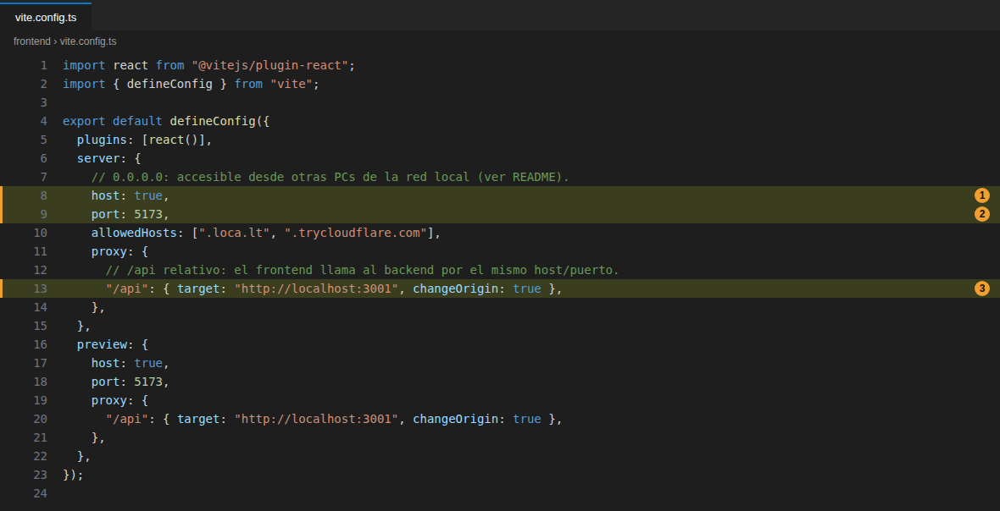
Qué explicar (siguiendo los números naranjas)
- 1
host: true → Vite escucha en 0.0.0.0, por eso en tu terminal aparecen las líneas Network (192.168.x.x): otras PCs de la red pueden abrir el sistema (decisión D49).
- 2
port: 5173 → puerto fijo del frontend (D37). Coincide con CORS_ORIGIN del backend.
- 3
proxy '/api' → el navegador llama a /api/... en el mismo host/puerto y Vite lo reenvía a localhost:3001. Por eso VITE_API_URL=/api es relativo y funciona desde cualquier IP sin recompilar, y no hay problemas de CORS en desarrollo.
🎓 Pregunta probable: ¿Por qué usan un proxy en vez de llamar directo a http://localhost:3001? → Para que el frontend funcione desde otras máquinas de la red sin cambiar la URL, y evitar CORS.
app.ts — configuración de Express
📄 backend/src/app.ts · líneas 1–22
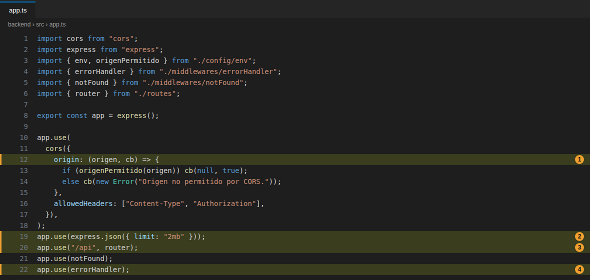
Qué explicar (siguiendo los números naranjas)
- 1
CORS con función propia (origenPermitido): acepta el origen configurado y, con CORS_LAN=true, localhost/192.168.x/10.x.
- 2
express.json({limit:'2mb'}) convierte el cuerpo JSON en req.body.
- 3
Todas las rutas cuelgan de /api (decisión D27).
- 4
El orden importa: notFound y luego errorHandler van AL FINAL para capturar lo que falle antes.
🎓 Pregunta probable: ¿Por qué errorHandler va al final? → Express ejecuta middlewares en orden; un manejador de errores solo captura lo anterior.
db.ts — un único PrismaClient y SQLite en modo WAL
📄 backend/src/config/db.ts · líneas 1–18
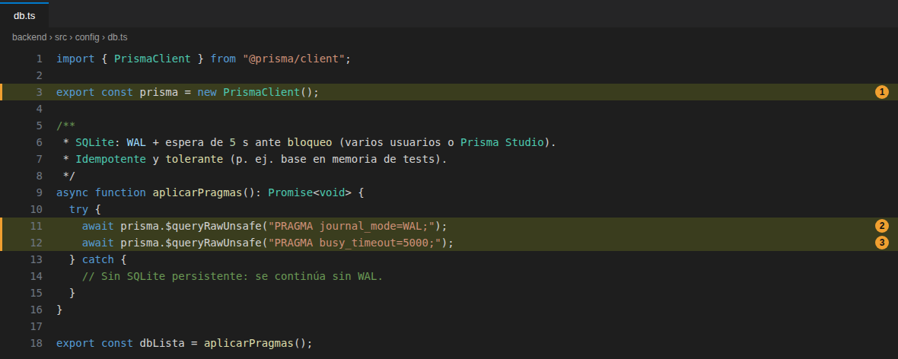
Qué explicar (siguiendo los números naranjas)
- 1
Una sola instancia de PrismaClient compartida por todo el backend.
- 2
journal_mode=WAL: permite leer mientras se escribe (varios usuarios, Prisma Studio abierto).
- 3
busy_timeout=5000: si la base está ocupada espera hasta 5 s antes de fallar (evita el 'database is locked' que causó 500 en el pasado, D55).
🎓 Pregunta probable: ¿Por qué SQLite y no MySQL? → No había servidor disponible; los tipos son portables y basta cambiar provider + DATABASE_URL (D26).
B. Base de datos (Prisma)
El modelo está en backend/prisma/schema.prisma. Son 4 tablas del SQL/SRS originales (Estudiante, Evaluacion, Resultado, Beca) más catálogos, asignaciones, seguimiento, documentos, eventos y usuarios.
Modelos Estudiante, Evaluacion, Resultado
📄 backend/prisma/schema.prisma · líneas 15–73
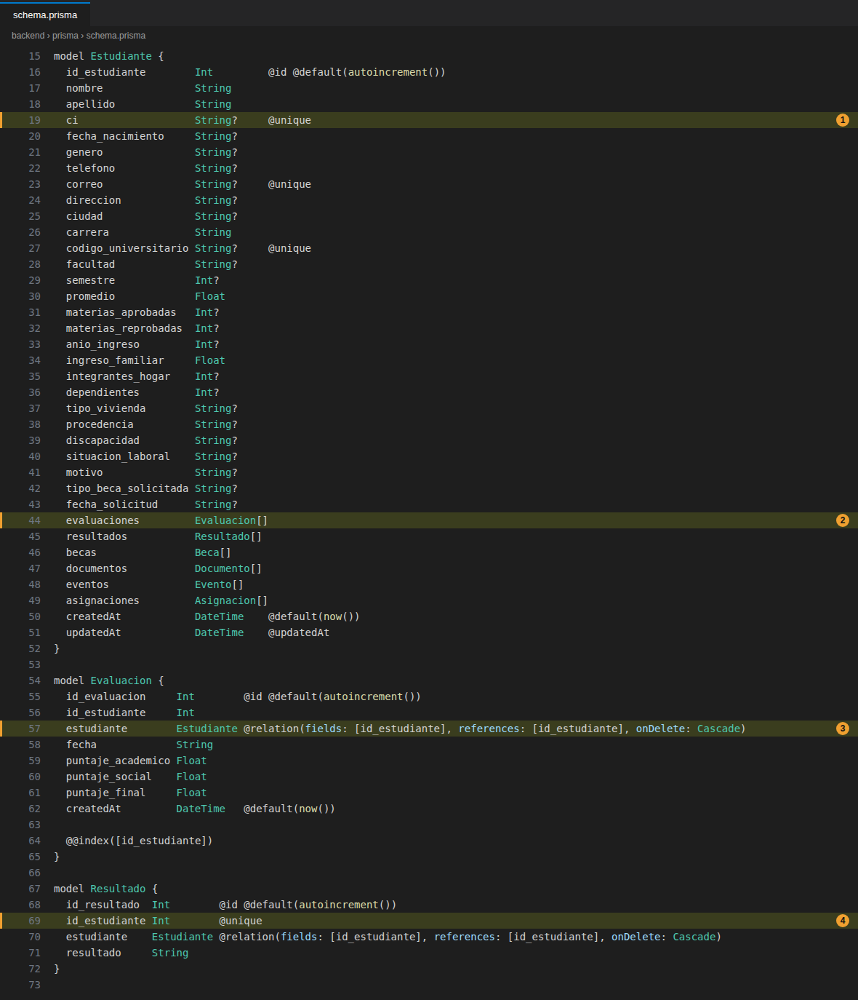
Qué explicar (siguiendo los números naranjas)
- 1
ci, correo y codigo_universitario son String? @unique: opcionales pero no repetibles (el choque da error P2002 → 409 'Ya existe un registro con ese CI').
- 2
Relación 1-a-muchos: un estudiante tiene varias evaluaciones, documentos, eventos, asignaciones.
- 3
onDelete: Cascade: al borrar el estudiante se borran automáticamente sus evaluaciones (y demás dependientes).
- 4
Resultado.id_estudiante @unique: solo UNA etiqueta vigente por estudiante → por eso el código usa upsert.
🎓 Pregunta probable: ¿Qué se borra al eliminar un estudiante? → En cascada: evaluaciones, resultado, becas, documentos, eventos y asignaciones.
Modelo Asignacion (beca otorgada)
📄 backend/prisma/schema.prisma · líneas 147–162
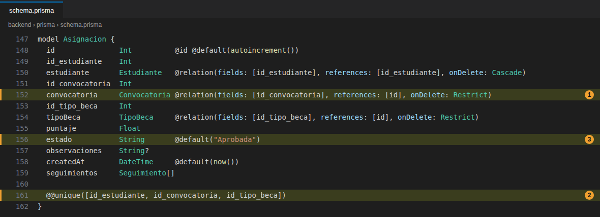
Qué explicar (siguiendo los números naranjas)
- 1
Restrict: NO se puede borrar una convocatoria o tipo de beca que ya tiene asignaciones (el controlador además responde 409).
- 2
@@unique([id_estudiante, id_convocatoria, id_tipo_beca]): impide asignar dos veces la misma beca al mismo estudiante en la misma convocatoria.
- 3
Estado por defecto 'Aprobada'; luego puede pasar a Rechazada / En observación / En espera.
🎓 Pregunta probable: ¿Cómo se evita duplicar asignaciones? → Restricción única compuesta en la BD, no solo validación en código.
Modelo Usuario (login)
📄 backend/prisma/schema.prisma · líneas 178–191
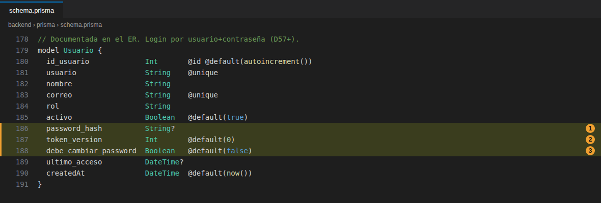
Qué explicar (siguiendo los números naranjas)
- 1
Nunca se guarda la contraseña, solo el hash bcrypt.
- 2
token_version: contador que invalida sesiones cuando cambia la contraseña/usuario.
- 3
debe_cambiar_password: obliga a cambiarla en el siguiente ingreso.
🎓 Pregunta probable: ¿Cómo cierran sesiones sin lista negra? → Subiendo token_version; el token viejo ya no coincide.
C. Motor DSS (lo más importante)
Vive en backend/src/dss/ como funciones puras: no tocan la base de datos ni Express. Los controladores solo las llaman. Así se prueban fácil y se cumple la regla de arquitectura de AGENTS.md.
criterios.ts — pesos y umbrales
📄 backend/src/dss/criterios.ts · líneas 1–36
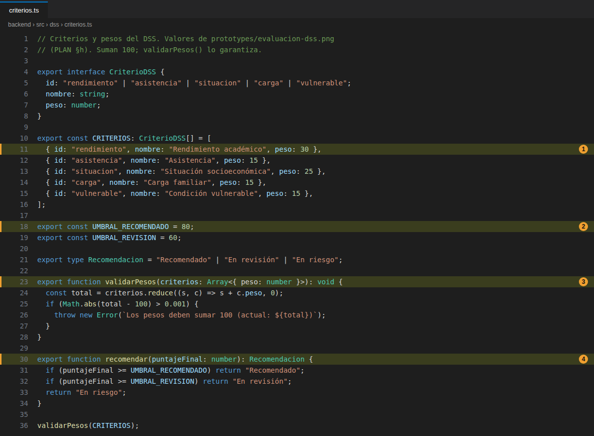
Qué explicar (siguiendo los números naranjas)
- 1
Los 5 criterios y sus pesos: 30 + 15 + 25 + 15 + 15 = 100.
- 2
Umbrales: ≥ 80 Recomendado, ≥ 60 En revisión, si no En riesgo.
- 3
validarPesos lanza error si los pesos no suman 100 (se ejecuta al cargar el módulo).
- 4
recomendar(puntaje) traduce un número a la etiqueta.
🎓 Pregunta probable: ¿De dónde salen 30/15/25/15/15 y 80/60? → De prototypes/evaluacion-dss.png (decisión D30).
motor.ts — calcular()
📄 backend/src/dss/motor.ts · líneas 18–46
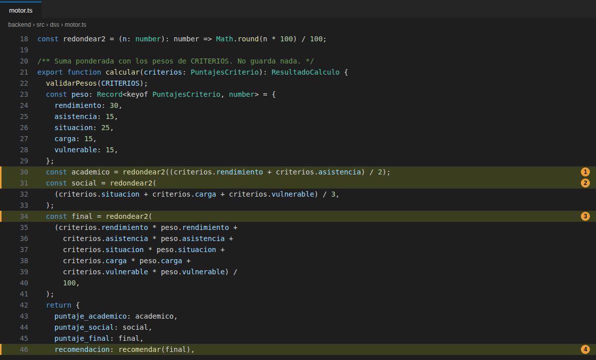
Qué explicar (siguiendo los números naranjas)
- 1
Académico = (rendimiento + asistencia) / 2.
- 2
Social = (situación + carga + vulnerable) / 3.
- 3
Final = suma ponderada (rend·30 + asist·15 + sit·25 + carga·15 + vuln·15) / 100. Ejemplo 90/80/70/60/50 → 73.0 (captura de la pantalla de Evaluación).
- 4
Devuelve además la recomendación. Todo redondeado a 2 decimales.
🎓 Pregunta probable: Calculen 100/100/100/0/0 → académico 100, social 33.33, final 70.0 → En revisión. Ojo: los pesos aparecen fijos en el objeto peso (líneas 23-28), duplicando CRITERIOS; por eso los pesos editados en Configuración no cambian el cálculo (punto débil #1 de la guía).
motor.ts — derivarCriterios() (evaluar todos)
📄 backend/src/dss/motor.ts · líneas 50–64
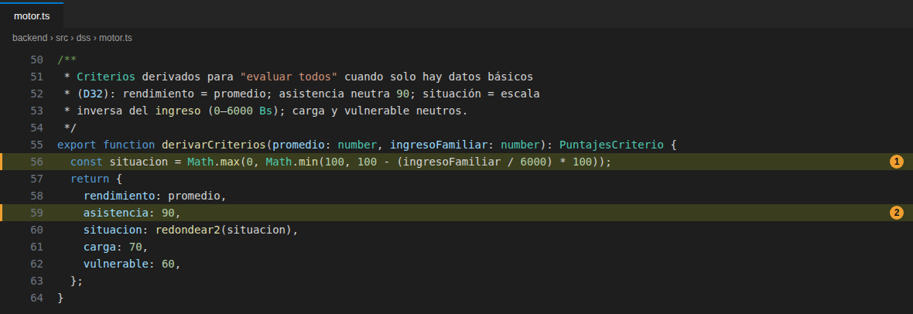
Qué explicar (siguiendo los números naranjas)
- 1
Cuando solo se conocen promedio e ingreso (botón 'Evaluar pendientes') se derivan los demás criterios (D32).
- 2
Situación = escala inversa del ingreso: a más ingreso, menos puntos (0–6000 Bs → 100–0).
- 3
Asistencia 90, carga 70 y vulnerable 60 son valores neutros fijos.
🎓 Pregunta probable: ¿Es un dato real? → No: es una aproximación documentada para evaluar en lote.
elegibilidad.ts — filtros duros
📄 backend/src/dss/elegibilidad.ts · líneas 3–27
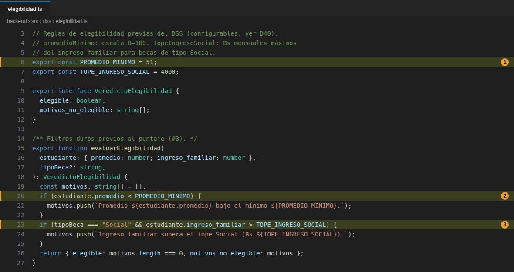
Qué explicar (siguiendo los números naranjas)
- 1
Constantes configurables: promedio mínimo 51 y tope de ingreso Bs 4000 para beca Social (D40).
- 2
Si el promedio es menor al mínimo → no elegible, con el motivo escrito.
- 3
Solo la beca Social exige el tope de ingreso. Devuelve {elegible, motivos_no_elegible[]}.
🎓 Pregunta probable: ¿Qué pasa con alguien de 95 puntos y promedio 40? → Se muestra 'No elegible' con el motivo.
ranking.ts — mejor evaluación y desempates
📄 backend/src/dss/ranking.ts · líneas 1–28
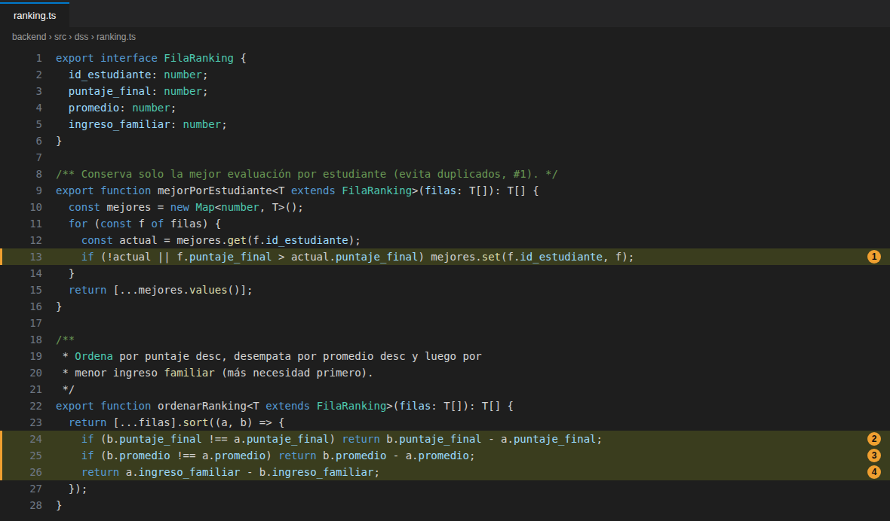
Qué explicar (siguiendo los números naranjas)
- 1
mejorPorEstudiante: si hay varias evaluaciones de la misma persona, se queda con la de mayor puntaje (evita duplicados, issue #1).
- 2
Primer criterio de orden: puntaje descendente.
- 3
Desempate 1: mayor promedio.
- 4
Desempate 2: menor ingreso familiar (más necesidad primero).
🎓 Pregunta probable: ¿Cómo desempata el ranking? → puntaje ↓, promedio ↓, ingreso ↑.
dss/seguimiento.ts — regla de riesgo académico
📄 backend/src/dss/seguimiento.ts · líneas 1–14
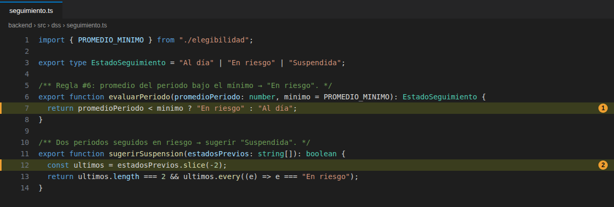
Qué explicar (siguiendo los números naranjas)
- 1
Promedio del periodo bajo 51 → 'En riesgo'; si no 'Al día'. El estado lo calcula el servidor, no lo manda el cliente.
- 2
Se sugiere suspensión cuando los dos últimos periodos están 'En riesgo'.
🎓 Pregunta probable: ¿Quién decide el estado del seguimiento? → El backend, por regla; el usuario solo digita el promedio.
D. API: rutas, seguridad y validación
Cada petición pasa por una cadena: autenticación → permiso → validación → controlador → manejador de errores.
routes/index.ts — cadena de middlewares
📄 backend/src/routes/index.ts · líneas 38–51
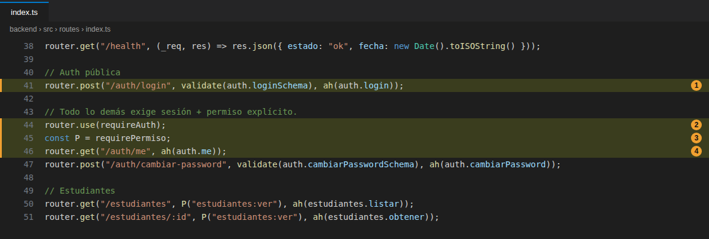
Qué explicar (siguiendo los números naranjas)
- 1
Solo /health y /auth/login son públicas.
- 2
Desde router.use(requireAuth) TODAS las rutas siguientes exigen sesión.
- 3
P(...) es un atajo de requirePermiso: cada ruta declara el permiso 'modulo:accion'.
- 4
Después de esta línea se define cada endpoint.
🎓 Pregunta probable: ¿Qué garantiza que ninguna ruta quede sin permiso? → El test permisos.test.ts recorre el router y falla si falta alguno.
routes/index.ts — ejemplo de ruta completa
📄 backend/src/routes/index.ts · líneas 57–65
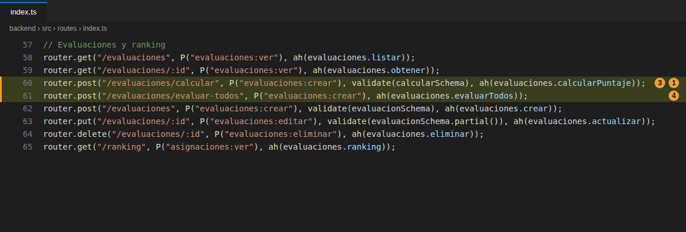
Qué explicar (siguiendo los números naranjas)
- 1
Cada ruta: método + ruta + permiso + validación + controlador.
- 2
validate(calcularSchema) (Zod) corta con 400 si el cuerpo es inválido.
- 3
ah(...) envuelve el controlador async para que los errores lleguen a errorHandler.
- 4
Ruta evaluar-todos: solo con permiso evaluaciones:crear.
🎓 Pregunta probable: ¿Qué es ah? → Un wrapper de handlers async, porque Express 4 no captura promesas rechazadas.
requireAuth.ts — autenticación en cada petición
📄 backend/src/middlewares/requireAuth.ts · líneas 35–66
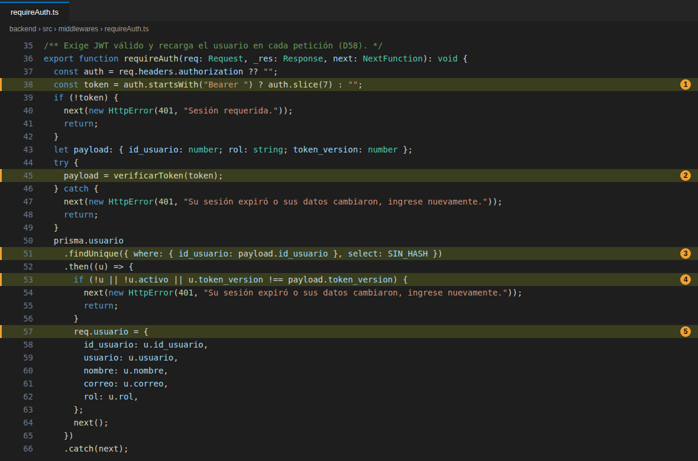
Qué explicar (siguiendo los números naranjas)
- 1
Lee el header Authorization: Bearer <token>; sin token → 401.
- 2
Verifica firma y expiración del JWT.
- 3
Recarga al usuario desde la BD en cada petición: los cambios de rol o estado aplican al instante (D57).
- 4
Si el usuario no existe, está inactivo o cambió token_version → 401.
- 5
Deja req.usuario disponible para requirePermiso y los controladores.
🎓 Pregunta probable: ¿Por qué consultan la BD si el token ya trae el rol? → Para que desactivar o cambiar de rol surta efecto de inmediato.
permisos.ts — matriz por rol (parte Administrador)
📄 backend/src/auth/permisos.ts · líneas 9–33
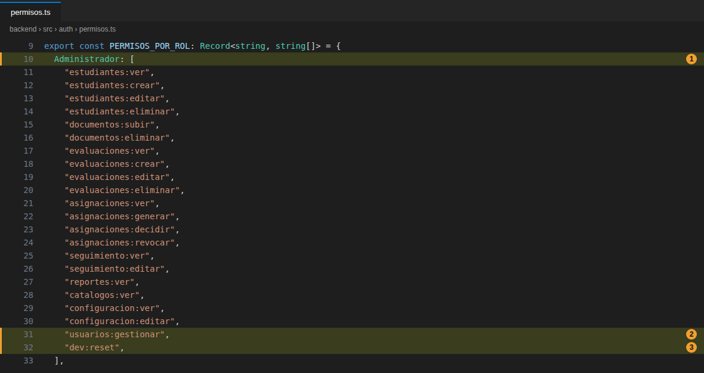
Qué explicar (siguiendo los números naranjas)
- 1
Única fuente de verdad de permisos (D61): mapa rol → lista de 'modulo:accion'.
- 2
Solo el Administrador gestiona usuarios.
- 3
Solo el Administrador puede restablecer datos (dev:reset). Evaluador y Consulta tienen listas más cortas.
🎓 Pregunta probable: ¿Dónde se define qué puede hacer cada rol? → Solo aquí; el frontend recibe la lista desde el servidor.
permisos.ts — requirePermiso()
📄 backend/src/auth/permisos.ts · líneas 69–85
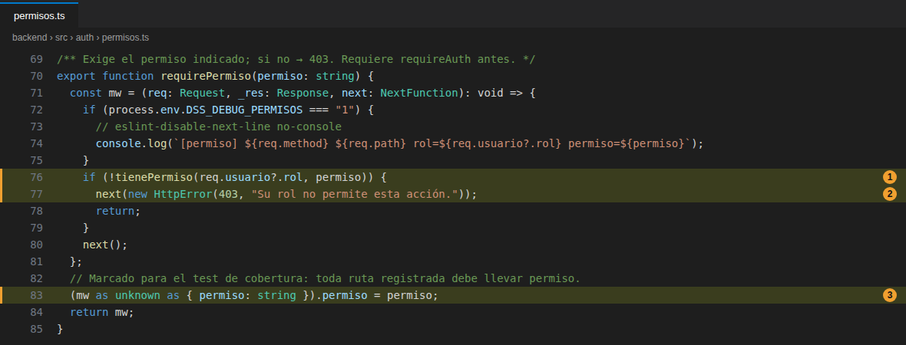
Qué explicar (siguiendo los números naranjas)
- 1
Comprueba si el rol del usuario incluye el permiso.
- 2
Si no → 403 'Su rol no permite esta acción.'.
- 3
Marca el middleware con .permiso para que el test de cobertura pueda detectar rutas sin permiso.
🎓 Pregunta probable: ¿Diferencia entre 401 y 403? → 401: no hay sesión válida; 403: hay sesión pero el rol no alcanza.
jwt.ts — firmar y verificar tokens
📄 backend/src/auth/jwt.ts · líneas 10–29
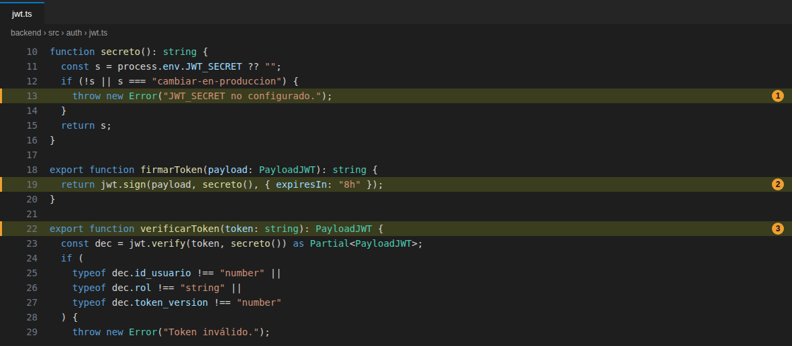
Qué explicar (siguiendo los números naranjas)
- 1
Si JWT_SECRET falta o es el valor de ejemplo, el sistema falla a propósito en vez de correr inseguro.
- 2
El token expira en 8 horas.
- 3
verificarToken valida además la forma del payload (id, rol, token_version).
🎓 Pregunta probable: ¿Qué es un JWT? → Token firmado con el secreto del servidor que identifica al usuario sin guardar sesión en memoria.
validate.ts — validación con Zod
📄 backend/src/middlewares/validate.ts · líneas 5–21
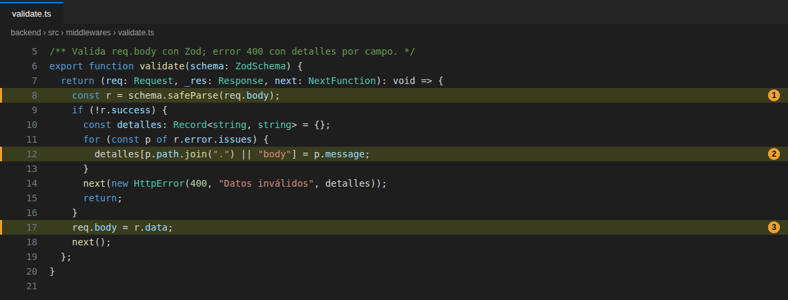
Qué explicar (siguiendo los números naranjas)
- 1
safeParse valida el cuerpo sin lanzar excepciones.
- 2
Arma detalles {campo: mensaje} para que el frontend pinte cada error en su campo.
- 3
Reemplaza req.body por los datos ya limpios/convertidos (por ejemplo '1.499,99' → 1499.99).
🎓 Pregunta probable: ¿Por qué validar también en el servidor si ya validan en el formulario? → Nunca se confía en el cliente.
schemas.ts — aVacio y aDecimal (guardado robusto)
📄 backend/src/validators/schemas.ts · líneas 15–36
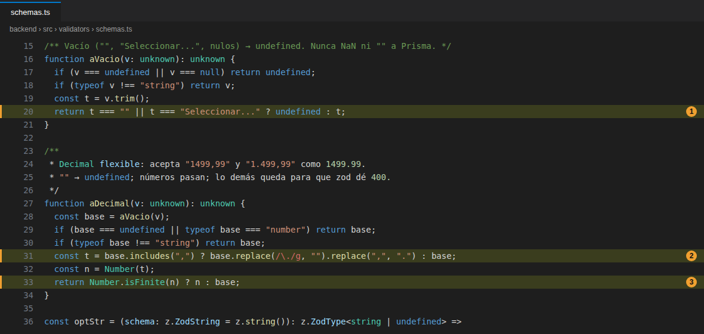
Qué explicar (siguiendo los números naranjas)
- 1
aVacio: convierte '', 'Seleccionar...' y null en undefined. Evita guardar '' en campos únicos (chocaban en P2002).
- 2
aDecimal: acepta coma decimal: '1.499,99' → quita puntos de miles y cambia coma por punto → 1499.99.
- 3
Si no es número válido devuelve el texto original para que Zod dé 400; nunca NaN a Prisma (decisiones D51/D52).
🎓 Pregunta probable: ¿Qué bug resolvieron aquí? → Error 500 al guardar por coma decimal y cadenas vacías en campos únicos.
errorHandler.ts — errores uniformes
📄 backend/src/middlewares/errorHandler.ts · líneas 22–61
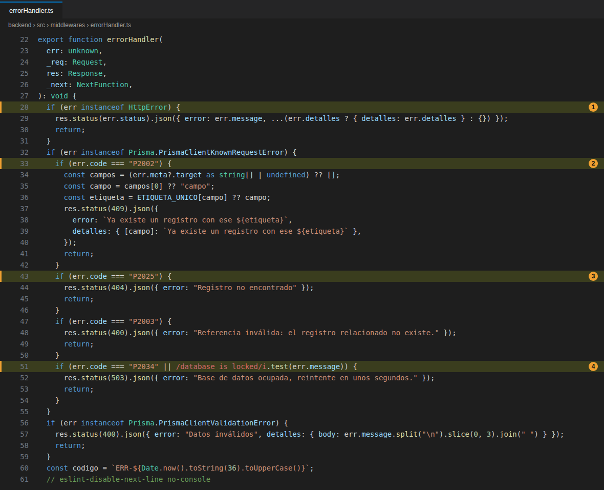
Qué explicar (siguiendo los números naranjas)
- 1
Errores propios → su status y {error, detalles}.
- 2
P2002 (valor único repetido) → 409 'Ya existe un registro con ese CI'.
- 3
P2025 (no existe) → 404.
- 4
Base bloqueada → 503 'Base de datos ocupada'. Lo demás cae a 500 con código ERR-XXXX registrado en el log.
🎓 Pregunta probable: ¿Qué formato tienen los errores? → Siempre JSON {error, detalles?}.
E. Controladores (lógica de cada módulo)
Los controladores reciben req/res, usan Prisma y llaman al motor DSS. Aquí están los puntos que más se preguntan.
evaluaciones.ts — calcular y guardar
📄 backend/src/controllers/evaluaciones.ts · líneas 9–44
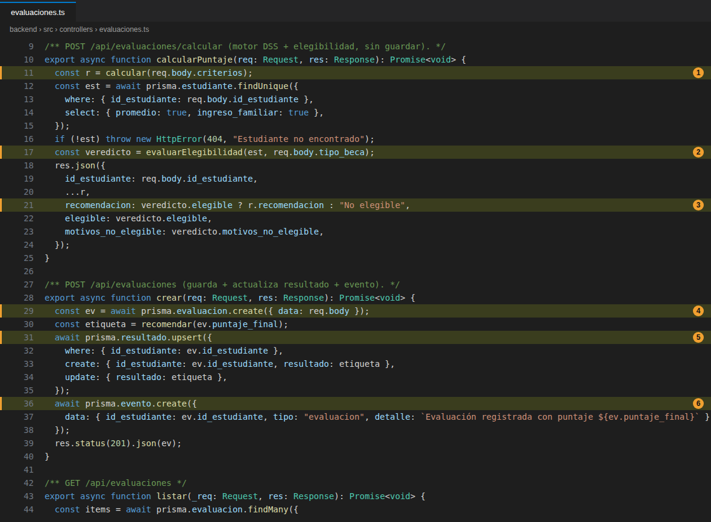
Qué explicar (siguiendo los números naranjas)
- 1
calcularPuntaje llama al motor (no calcula en el controlador).
- 2
Busca promedio e ingreso del estudiante y aplica elegibilidad.
- 3
Si no es elegible la recomendación se reemplaza por 'No elegible'. No guarda nada.
- 4
crear guarda la Evaluación…
- 5
…hace upsert del Resultado (crear o actualizar la única etiqueta vigente)…
- 6
…y registra un Evento en el historial del estudiante.
🎓 Pregunta probable: Observación honesta: crear guarda recomendar(puntaje) sin considerar elegibilidad (ver sección de puntos débiles).
asignaciones.ts — generar (top-N por cupos)
📄 backend/src/controllers/asignaciones.ts · líneas 50–96
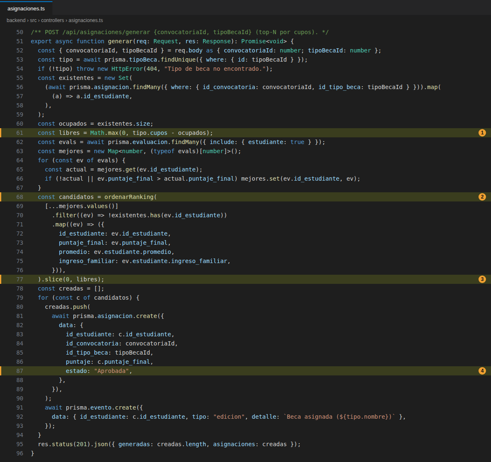
Qué explicar (siguiendo los números naranjas)
- 1
Cupos libres = cupos del tipo de beca − ya asignados.
- 2
Toma la mejor evaluación de cada estudiante que aún no tiene asignación y la ordena con las reglas de desempate del motor.
- 3
slice(0, libres): nunca supera los cupos.
- 4
Crea cada asignación como 'Aprobada' y registra el evento.
🎓 Pregunta probable: ¿Cómo evitan pasarse de cupos? → Solo se toman cupos − ocupados candidatos; además hay restricción única en la BD.
asignaciones.ts — decisión con observaciones
📄 backend/src/controllers/asignaciones.ts · líneas 98–113
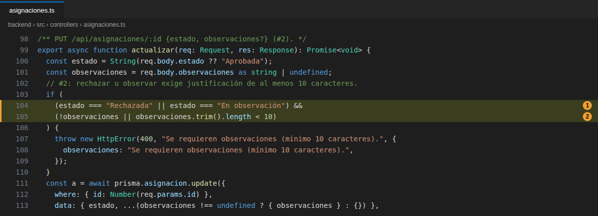
Qué explicar (siguiendo los números naranjas)
- 1
Rechazar o poner 'En observación' exige justificar.
- 2
Mínimo 10 caracteres de observación, si no → 400 con el error en el campo observaciones (issue #2 de QA).
🎓 Pregunta probable: ¿Por qué obligan la justificación? → Trazabilidad de decisiones que afectan a un estudiante.
seguimiento.ts — el estado se calcula por regla
📄 backend/src/controllers/seguimiento.ts · líneas 45–66
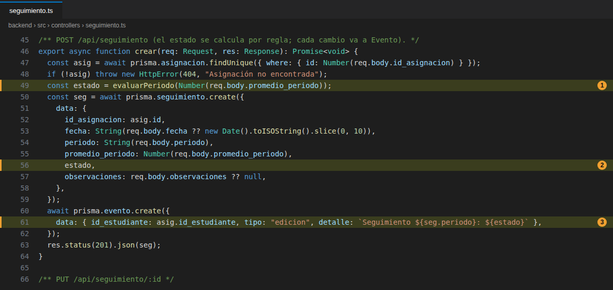
Qué explicar (siguiendo los números naranjas)
- 1
El estado NO viene del cliente: se calcula con evaluarPeriodo (regla del motor).
- 2
Se guarda junto al promedio del periodo.
- 3
Cada cambio queda en el historial (Evento).
🎓 Pregunta probable: ¿Se puede falsear el estado? → No, el cliente solo envía el promedio.
auth.ts — límite de intentos de login
📄 backend/src/controllers/auth.ts · líneas 33–48
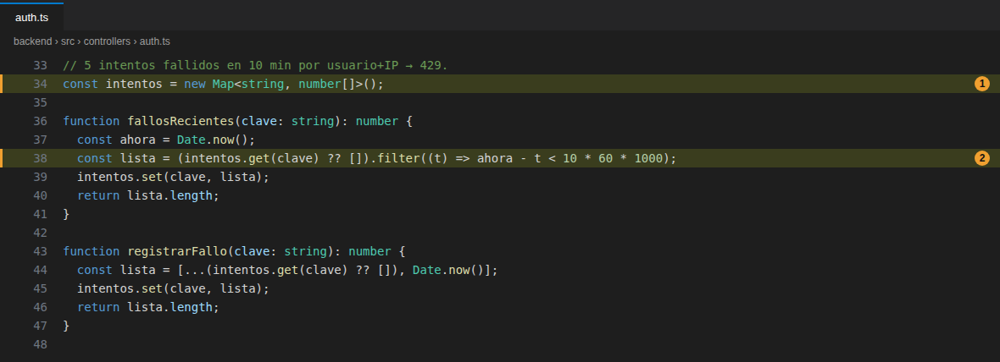
Qué explicar (siguiendo los números naranjas)
- 1
Mapa en memoria usuario:IP → marcas de tiempo de fallos.
- 2
Solo cuenta los fallos de los últimos 10 minutos; con 5 → 429 'Demasiados intentos'.
- 3
Limitación conocida: se pierde al reiniciar el servidor (D58).
🎓 Pregunta probable: ¿Qué ataque previene? → Fuerza bruta de contraseñas.
auth.ts — login: bcrypt y token
📄 backend/src/controllers/auth.ts · líneas 69–94
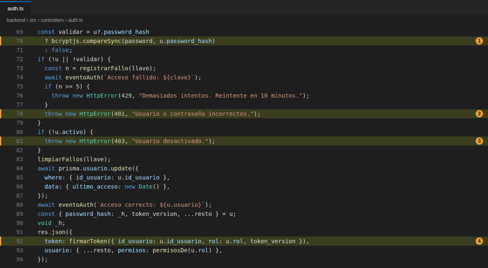
Qué explicar (siguiendo los números naranjas)
- 1
Compara la contraseña con el hash bcrypt (nunca en claro).
- 2
Mismo mensaje para usuario inexistente o contraseña mala: no revela cuál falló.
- 3
Usuario desactivado → 403.
- 4
Devuelve el token y el usuario sin password_hash, con su lista de permisos.
🎓 Pregunta probable: ¿Por qué el mismo mensaje en ambos casos? → Para no dar pistas a un atacante.
usuarios.ts — proteger al último administrador
📄 backend/src/controllers/usuarios.ts · líneas 186–199
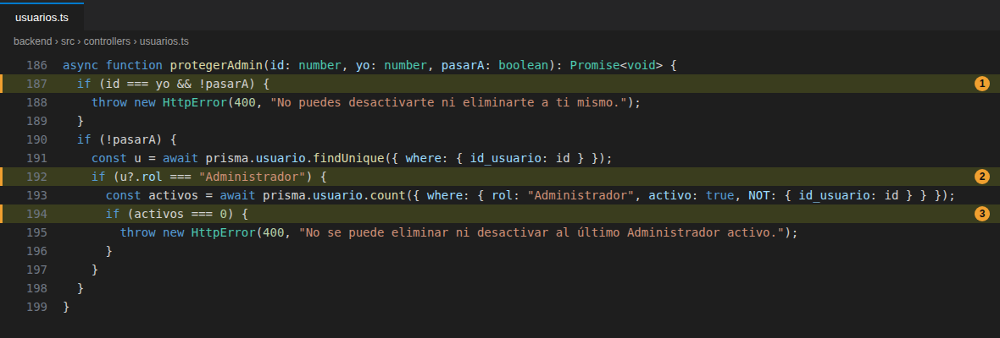
Qué explicar (siguiendo los números naranjas)
- 1
Nadie puede desactivarse ni eliminarse a sí mismo.
- 2
Si el usuario afectado es Administrador…
- 3
…y no queda otro admin activo → se rechaza. Evita dejar el sistema sin administradores.
🎓 Pregunta probable: ¿Qué pasaría sin esta regla? → Un admin podría bloquear el sistema por error.
documentos.ts — subida segura con multer
📄 backend/src/controllers/documentos.ts · líneas 9–27
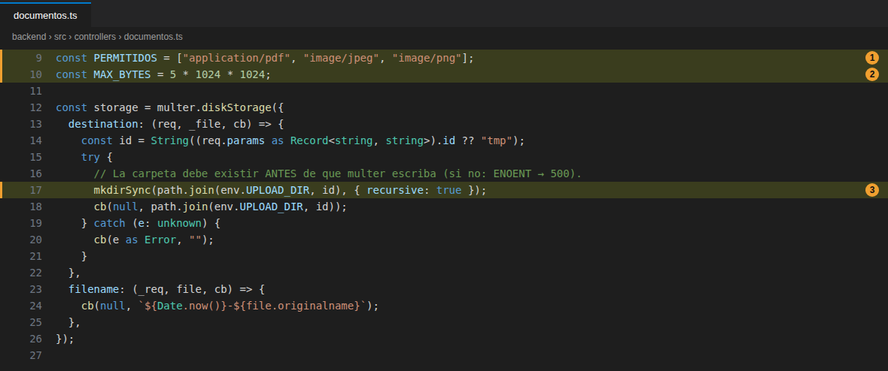
Qué explicar (siguiendo los números naranjas)
- 1
Solo PDF, JPG y PNG.
- 2
Máximo 5 MB por archivo.
- 3
La carpeta uploads/<id> se crea antes de que multer escriba: antes su ausencia causaba error 500 (ENOENT, D51).
🎓 Pregunta probable: ¿Cómo se guardan los archivos? → En disco; la BD solo guarda nombre, tamaño, tipo y ruta.
F. Pruebas automáticas
Vitest + supertest. Tras instalar dependencias en esta revisión se ejecutaron: backend 52/52 y frontend 11/11 pasan.
permisos.test.ts — cobertura de todas las rutas
📄 backend/tests/permisos.test.ts · líneas 92–116
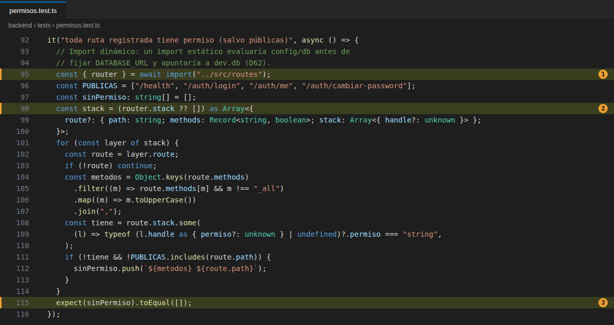
Qué explicar (siguiendo los números naranjas)
- 1
Import dinámico: un import estático crearía PrismaClient antes de fijar DATABASE_URL y escribiría en la base real (incidente D62/D63).
- 2
Recorre todas las rutas registradas en el router de Express.
- 3
Falla si alguna ruta (salvo las públicas) no tiene middleware de permiso.
🎓 Pregunta probable: ¿Qué aprendieron del incidente? → No importar estáticamente la cadena src en tests; usar import dinámico.
api.test.ts — pruebas del motor
📄 backend/tests/api.test.ts · líneas 32–55
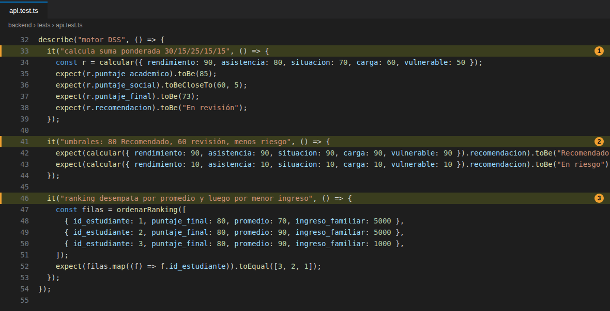
Qué explicar (siguiendo los números naranjas)
- 1
Verifica la suma ponderada 30/15/25/15/15 (equivale a CP-002).
- 2
Verifica los umbrales 80/60.
- 3
Verifica el orden y los desempates del ranking.
🎓 Pregunta probable: ¿Qué exige el SRS sobre el cálculo? → Que se valide contra casos de prueba estandarizados.
G. Frontend: estructura, sesión y datos
React + TypeScript. Las páginas no llaman fetch directamente: usan la capa services/api y TanStack Query.
main.tsx — providers anidados
📄 frontend/src/main.tsx · líneas 14–25
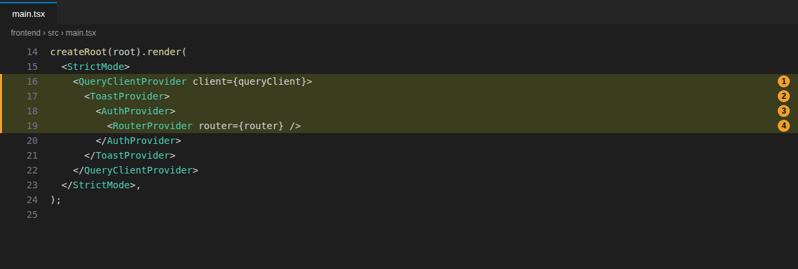
Qué explicar (siguiendo los números naranjas)
- 1
Caché de datos del servidor disponible en toda la app.
- 2
Notificaciones (toasts) globales.
- 3
Sesión y permisos del usuario (useAuth).
- 4
Router en el nivel más interno: todas las páginas pueden usar los tres contextos anteriores.
🎓 Pregunta probable: ¿Por qué ese orden? → Los de afuera están disponibles para los de adentro.
router.tsx — rutas anidadas y protegidas
📄 frontend/src/routing/router.tsx · líneas 19–63
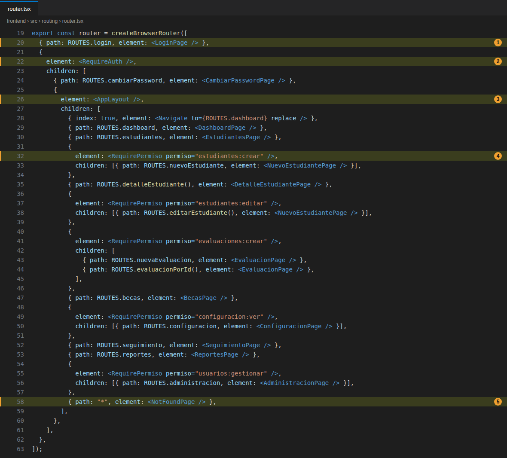
Qué explicar (siguiendo los números naranjas)
- 1
/login es la única ruta pública.
- 2
RequireAuth: sin sesión redirige a login.
- 3
AppLayout pinta menú lateral + cabecera y las páginas entran por <Outlet/>.
- 4
RequirePermiso: aunque escriban la URL a mano, sin el permiso ven 'Acceso denegado'.
- 5
Cualquier otra ruta → página 404.
🎓 Pregunta probable: ¿Es seguro ocultar rutas en el frontend? → Es solo UX; la seguridad real es el 403 del backend.
guards.tsx — RequireAuth
📄 frontend/src/routing/guards.tsx · líneas 7–26
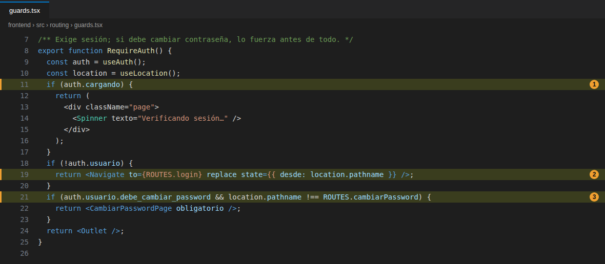
Qué explicar (siguiendo los números naranjas)
- 1
Mientras se valida el token guardado muestra un spinner (evita parpadeo de login).
- 2
Sin usuario → redirige a /login recordando la ruta de origen.
- 3
Si debe_cambiar_password fuerza la pantalla de cambio antes de cualquier otra.
🎓 Pregunta probable: ¿Qué pasa con la primera sesión de un usuario nuevo? → Puede ser forzado a cambiar su contraseña.
client.ts — cliente HTTP
📄 frontend/src/services/api/client.ts · líneas 29–61
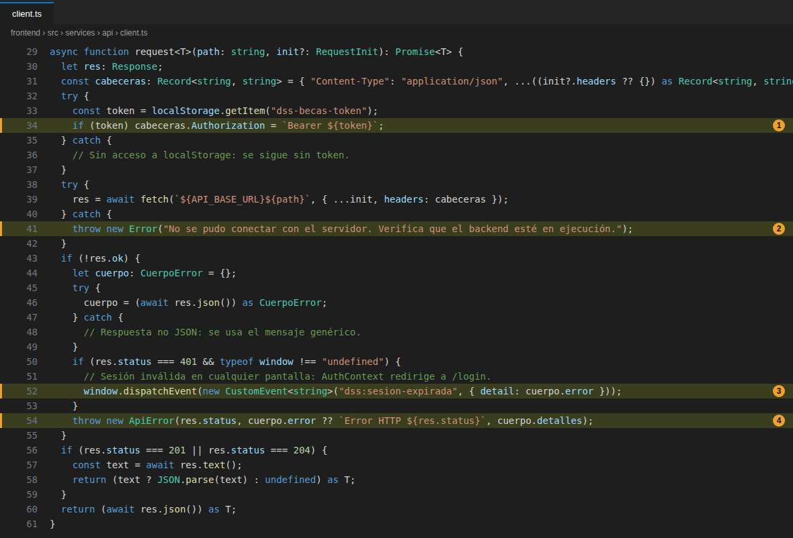
Qué explicar (siguiendo los números naranjas)
- 1
Adjunta el token guardado en cada petición.
- 2
Si el servidor no responde → mensaje claro, sin fallback silencioso a datos falsos (D50).
- 3
Ante cualquier 401 lanza un evento global; AuthContext lo escucha y cierra la sesión.
- 4
Convierte el error del backend en ApiError(status, mensaje, detalles) para mostrar el mensaje exacto por campo.
🎓 Pregunta probable: ¿Dónde se centraliza el manejo de sesión expirada? → Aquí y en AuthContext, no en cada pantalla.
estudiantes.ts — misma firma en modo real y mock
📄 frontend/src/services/api/estudiantes.ts · líneas 70–85
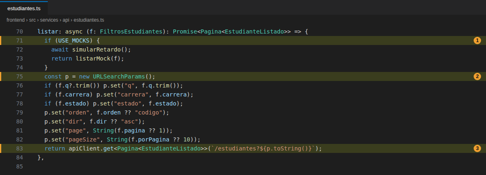
Qué explicar (siguiendo los números naranjas)
- 1
Con VITE_USE_MOCKS=true responde desde localStorage (modo demo). Por defecto está apagado.
- 2
En modo real arma la query string con los filtros.
- 3
Devuelve la misma forma {data,total,page,pageSize}, así las páginas no saben de dónde vienen los datos.
🎓 Pregunta probable: ¿Para qué sirve el modo mock? → Demostrar el frontend sin backend; nunca se activa solo.
AuthContext.tsx — cierre de sesión global
📄 frontend/src/state/AuthContext.tsx · líneas 100–109
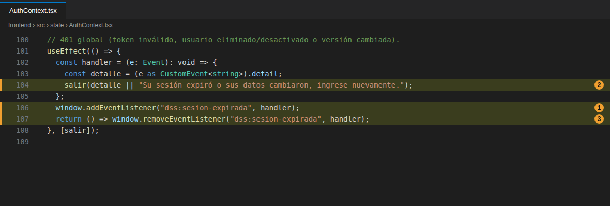
Qué explicar (siguiendo los números naranjas)
- 1
Escucha el evento que lanza client.ts ante un 401.
- 2
Limpia token y usuario del localStorage y muestra el aviso en el login.
- 3
Se quita el listener al desmontar (evita fugas de memoria).
🎓 Pregunta probable: ¿Qué guarda en localStorage? → Token y datos del usuario (con sus permisos).
EstudiantesPage — filtros en la URL + useQuery
📄 frontend/src/pages/EstudiantesPage.tsx · líneas 42–72
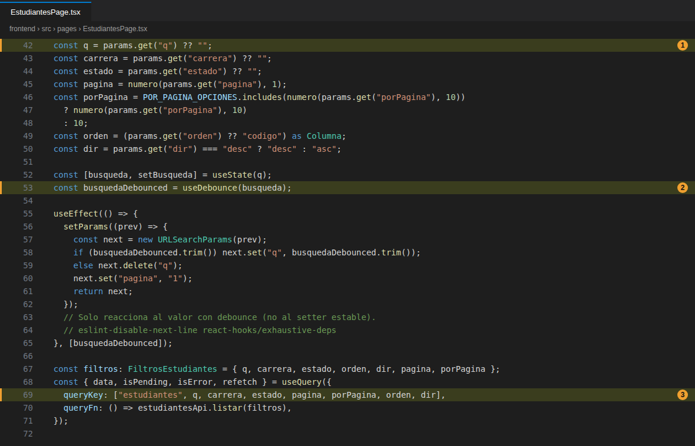
Qué explicar (siguiendo los números naranjas)
- 1
Filtros, orden y página viven en la URL (useSearchParams): se conservan al volver desde el detalle y se pueden compartir.
- 2
useDebounce: espera 300 ms tras la última tecla antes de buscar.
- 3
queryKey incluye todos los filtros: si cambia uno, TanStack Query hace una nueva consulta y guarda cada resultado en caché.
🎓 Pregunta probable: ¿Qué es la queryKey? → La etiqueta de caché de la consulta.
EvaluacionPage — guardar e invalidar cachés
📄 frontend/src/pages/EvaluacionPage.tsx · líneas 117–136
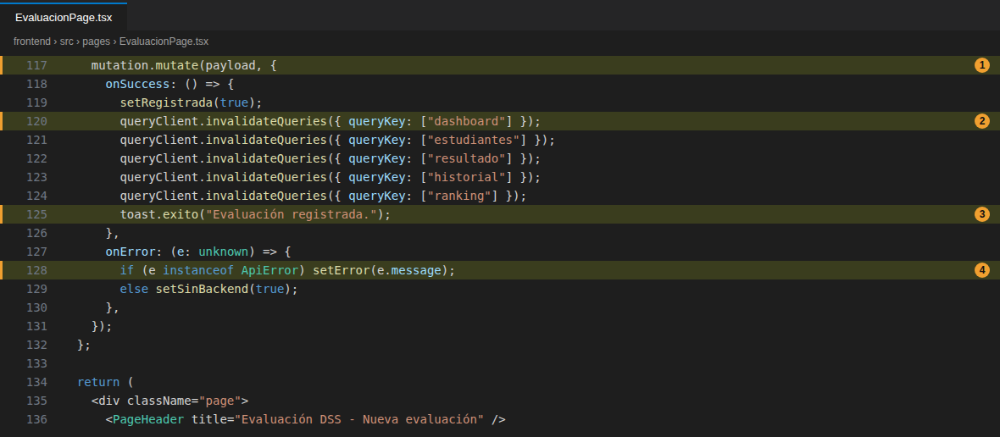
Qué explicar (siguiendo los números naranjas)
- 1
useMutation envía la evaluación al backend (POST /evaluaciones).
- 2
Tras guardar, invalida dashboard, estudiantes, ranking, etc.: las otras pantallas se actualizan solas.
- 3
Aviso de éxito para el usuario.
- 4
Si el servidor responde con error muestra su mensaje; si no responde, avisa que no hay conexión.
🎓 Pregunta probable: ¿Cómo se mantienen sincronizadas las pantallas? → Con invalidateQueries después de cada guardado.
Sidebar.tsx — menú según permisos
📄 frontend/src/components/layout/Sidebar.tsx · líneas 19–27
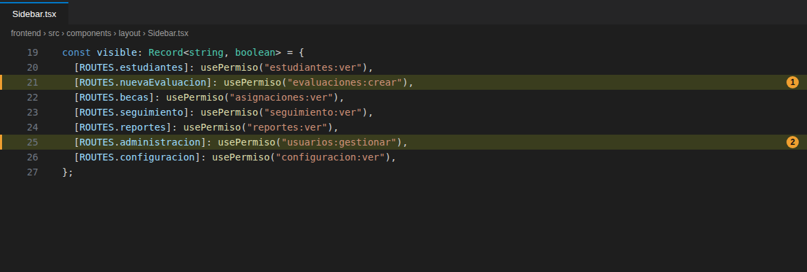
Qué explicar (siguiendo los números naranjas)
- 1
Cada ítem se muestra solo si el usuario tiene el permiso (que el backend le envió al iniciar sesión).
- 2
Administración solo para quien puede gestionar usuarios (D60).
🎓 Pregunta probable: ¿Ocultar el menú basta? → No: es comodidad; el backend igual devuelve 403.
H. Pantallas del sistema en funcionamiento
Capturas reales del sistema corriendo con los datos de ejemplo del seed (usuario admin). Para cada una: qué archivos la implementan y qué señalar.
Login
📄 pages/LoginPage.tsx + state/AuthContext.tsx + controllers/auth.ts
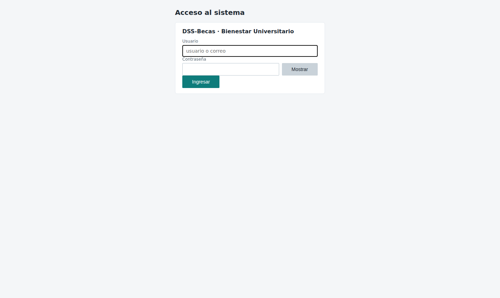
Qué explicar
- Acceso por usuario o correo + contraseña. Al enviar,
AuthContext.ingresar llama POST /api/auth/login. - El backend compara con bcrypt, aplica límite de 5 intentos/10 min y devuelve token JWT + permisos.
- Tras entrar vuelve a la ruta que se intentó abrir (
location.state.desde).
Dashboard DSS
📄 pages/DashboardPage.tsx, services/api/dashboard.ts, controllers/dashboard.ts
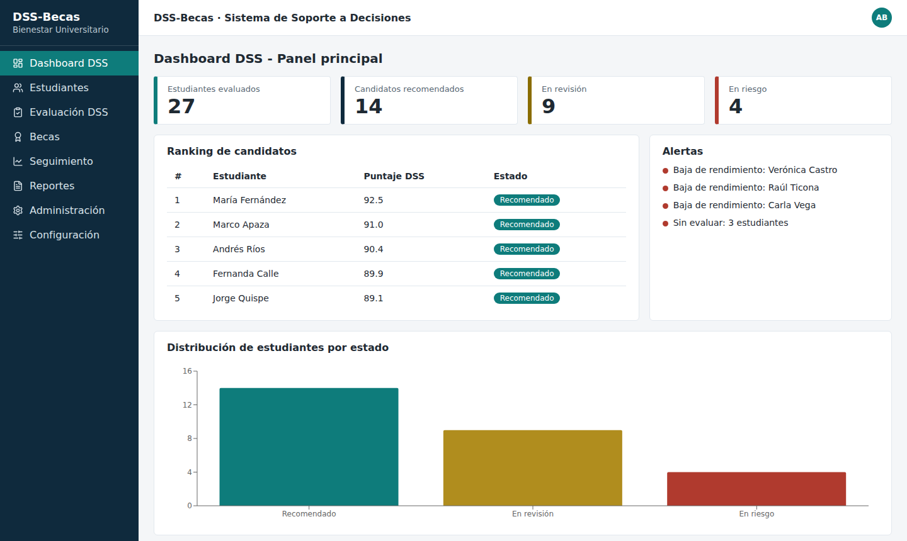
Qué explicar
- Los 4 KPI (evaluados / recomendados / en revisión / en riesgo) salen de
GET /api/dashboard/resumen, calculados con consultas reales (no hardcodeados). - Ranking top-5: una fila por estudiante con su mejor puntaje (issue #1).
- Alertas y gráfico de distribución (recharts/CSS). Clave de caché compartida
["dashboard"].
Gestión de estudiantes
📄 pages/EstudiantesPage.tsx, controllers/estudiantes.ts (listar)
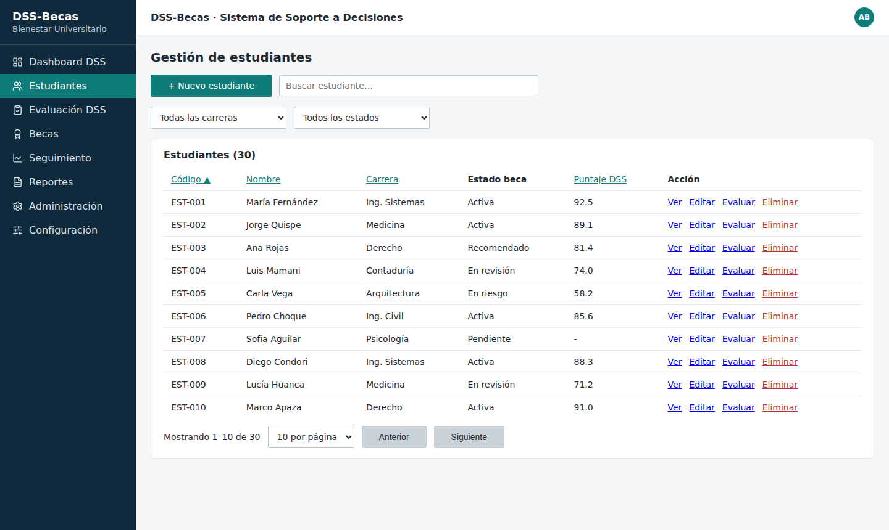
Qué explicar
- Búsqueda con debounce, filtros de carrera/estado, orden y paginación guardados en la URL.
- El estado (Recomendado/En revisión/En riesgo/Pendiente/Activa) se deriva en
estadoDe() del backend. - Los botones (Nuevo, Editar, Evaluar, Eliminar) aparecen según los permisos del rol.
Detalle del estudiante
📄 pages/DetalleEstudiantePage.tsx, controllers/documentos.ts, estudiantes.historial
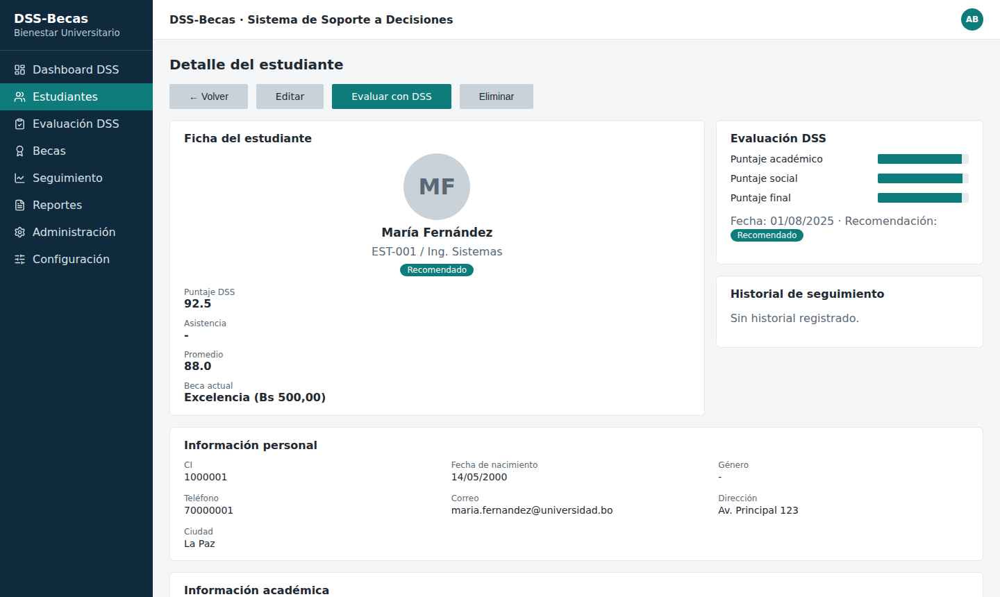
Qué explicar
- Ficha completa, evaluación vigente, documentos (subir/descargar/eliminar) e historial de eventos (tabla Evento).
- Cada acción del sistema (crear, editar, evaluar, asignar) deja un evento con fecha.
Alta de estudiante
📄 pages/NuevoEstudiantePage.tsx (alta y edición), validators/schemas.ts
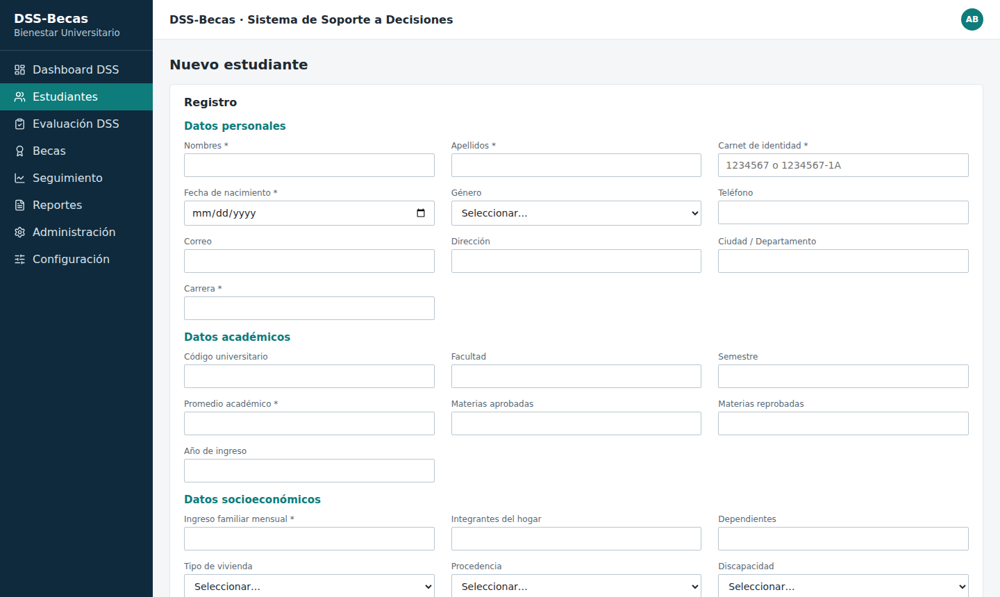
Qué explicar
- Un solo componente sirve para alta y edición (según haya
:idEstudiante). - Valida en el cliente (mismas reglas que Zod en el servidor) y muestra los errores del servidor en cada campo (
MAPA_SERVIDOR). - Acepta coma decimal (
parseDecimal en el frontend, aDecimal en el backend).
Evaluación DSS (73.0 En revisión)
📄 pages/EvaluacionPage.tsx, dss/motor.ts
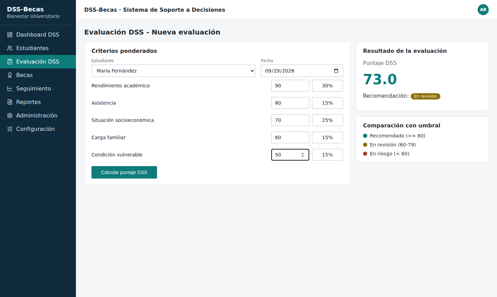
Qué explicar
- Con 90/80/70/60/50 el resultado es 73.0 → En revisión (mismo ejemplo de la guía).
- El botón llama primero
POST /evaluaciones/calcular (motor + elegibilidad) y luego guarda con POST /evaluaciones. - La leyenda de umbrales sale del componente
UmbralLegend.
Gestión de becas
📄 pages/BecasPage.tsx, controllers/asignaciones.ts, evaluaciones.ranking
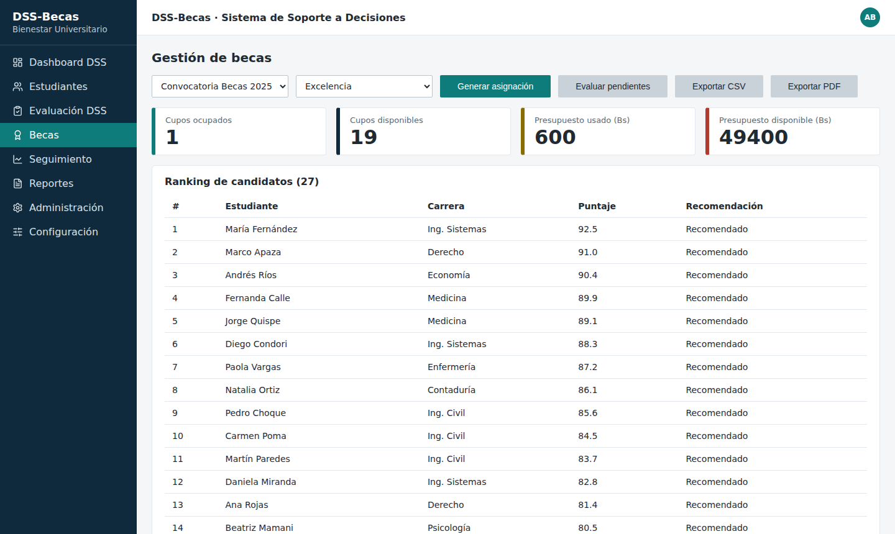
Qué explicar
- Se elige convocatoria + tipo de beca; los cuadros muestran cupos y presupuesto (
GET /asignaciones/resumen). - 'Generar asignación' toma los top-N según cupos libres; 'Evaluar pendientes' usa criterios derivados.
- Exportar CSV/PDF con
utils/export.ts.
Seguimiento académico
📄 pages/SeguimientoPage.tsx, dss/seguimiento.ts, controllers/seguimiento.ts
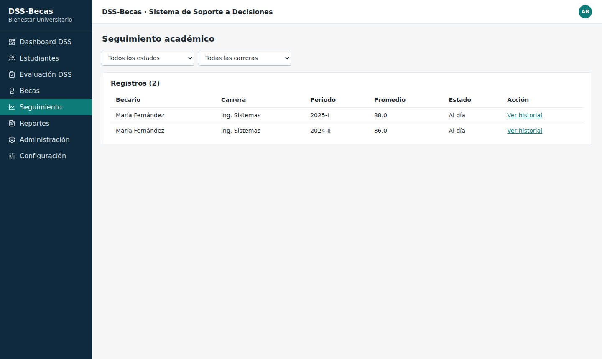
Qué explicar
- Historial por periodo de cada becario; el estado se calcula por regla (promedio < 51 → En riesgo).
- Dos periodos seguidos en riesgo → sugerencia de suspensión.
Reportes
📄 pages/ReportesPage.tsx, controllers/reportes.ts
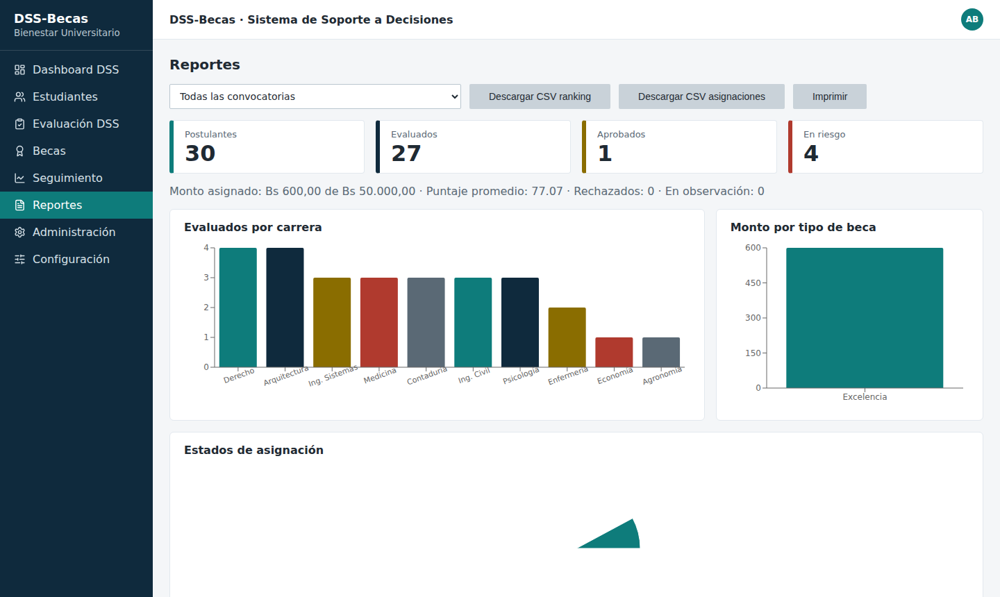
Qué explicar
- Resumen por convocatoria (postulantes, aprobados, monto vs presupuesto) con gráficos recharts.
- CSV generado en el servidor con BOM UTF-8 y
; (Excel en español). Impresión con @media print.
Configuración (catálogos)
📄 pages/ConfiguracionPage.tsx (CrudTab<T> genérico), controllers/catalogos.ts
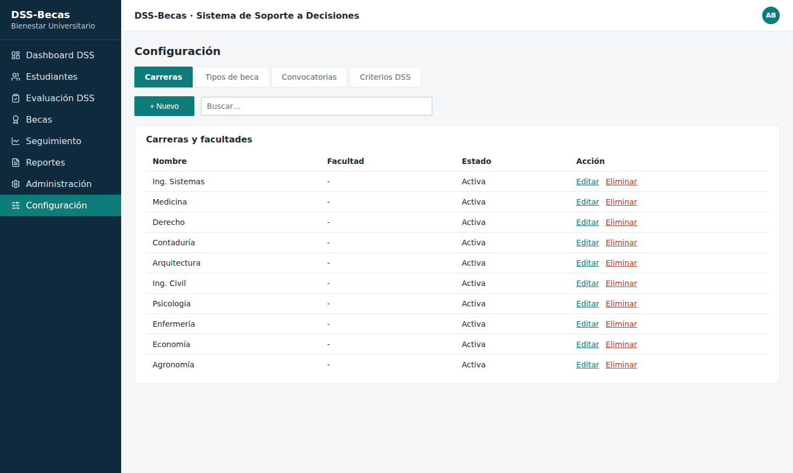
Qué explicar
- Pestañas de carreras, tipos de beca, convocatorias y criterios con un único componente CRUD genérico.
- Guardado de pesos en lote con suma 100 validada por Zod (issue #4).
- Ojo (punto débil): estos pesos se guardan pero el motor DSS usa los fijos.
Administración de usuarios
📄 pages/AdministracionPage.tsx, controllers/usuarios.ts
Qué explicar
- CRUD de usuarios con roles Administrador/Evaluador/Consulta y activar/desactivar.
- Protecciones: no borrarse a sí mismo ni al último admin activo.
Rol Consulta: acceso denegado
📄 routing/guards.tsx (RequirePermiso), auth/permisos.ts
Qué explicar
- Entrando como consulta y abriendo
/administracion por URL se ve 'Acceso denegado'. - Y aunque se saltara la UI, el backend respondería 403 (defensa en dos capas).